| veličina | oznaka veličine | ime enote | oznaka enote |
|---|---|---|---|
| dolžina | l, d, s | meter | m |
| masa | m | kilogram | kg |
| čas | t | sekunda | s |
| električni tok | I | amper | A |
| termodinamična temperatura | T (Θ) | kelvin | K |
| množina snovi | n | mol | mol |
| svetilnost | J | kandela | cd |
Brez razsežnosti/velikosti, ampak razmerja.
| veličina | oznaka veličine | ime enote | oznaka enote | izrazitev z osnovnimi enotami |
|---|---|---|---|---|
| ravninski kot | α | radian | rad | m/m |
| prostorski kot | Ω | steradian | sr | m2/m2 |
| izpeljana veličina | oznaka veličine | ime enote | oznaka enote | izrazitev z drugimi enotami | izrazitev z osnovnimi enotami | frekvenca | f | herc (hertz) | Hz | \[\frac{1}{s}\] |
|---|---|---|---|---|---|
| sila | F | njuten (newton) | N | \[\frac{kg\cdot m}{s^2}\] | |
| tlak, pritisk, mehanska napetost | p, σ | paskal (pascal) | Pa | \[\frac{N}{m^2}=Pa\cdot m^3\] | \[\frac{kg}{m\cdot s^2}\] |
| energija, delo, toplota, entalpija | W, E, A, Q, H | džul (joule) | J | \[N\cdot m\] | \[\frac{kg\cdot m^2}{s^2}\] |
| moč | P | vat (watt) | W | J / s | kg ms / s |
| električni naboj | Q | coulomb | C | A s | |
| električna napetost (električni potencial), jakost električnega polja | U | volt | V | J / C W / A |
m2 kg / s3 A |
| električni upor (električna upornost), impedanca, reaktanca | R | om (ohm) | Ω | V / A | m2 kg / s3 A2 |
| električna prevodnost | G | simens (siemens) | S | 1/Ω = V s = A / v | s3 A2 / m2 kg |
| kapacitivnost | C | farad | F | C / V | s4 A2 / m2 kg |
| gostota magnetnega toka/pretoka (magnetna indukcija) | B | tesla | T | Wb/m2 V s / m2 |
kg / s2 A |
| magnetni tok/pretok | ΦM | veber (weber) | Wb | V s | m2 kg / s2 A |
| induktivnost | L | henri (henry) | H | Wb / A V s / A |
m2 kg / s2 A2 |
| celzijeva temperatura | t | stopinja celzija | °C | K - 273,15 | |
| svetlobni tok | Φ | lumen | lm | cd sr | cd |
| osvetljenost | E | luks | lx | lm / m2 = cd sr / m2 | cd / m2 |
| radioaktivnost (razpadov na enoto časa) | A | bekerel (becquerel/beckverel) | Bq | 1 / s | |
| absorbirana doza (ionizirajočega sevanja) | D | grej (gray) | Gy | J /kg | m2 / s2 |
| ekvivalentna doza (ionizirajočega sevanja) | H | sivert (sievert) | Sv | J / kg | m2 / s2 |
| katalitična aktivnost | Akt k | katal | kat | mol / s |
| ime enote SI | oznaka za enoto SI | fizikalna količina | izrazitev z drugimi enotami | izrazitev z osnovnimi enotami SI |
|---|---|---|---|---|
| bar | bar | tlak, pritisk | 105 Pa | 105 kg / m s2 |
| vrednost | |
|---|---|
| težni pospešek | \[g=9,81\frac {m}{s^2}\] |
| težnostna stalnica | \[G=6,67\cdot10^{-11}\frac{N\cdot m^2}{kg^2}\] |
| hitrost svetlobe v praznem prostoru | \[c=2,99792458\cdot 10^8\frac{m}{s}\] |
| osnovni naboj | \[e_0=1,60\cdot10^{-19}A\cdot s\] |
| Avogadrovo število | \[N_A=6,02214076\cdot10^{23}\frac{1}{mol}=6,02\cdot10^{26}\frac{1}{kmol}\] |
| splošna plinska stalnica | \[R=8310\frac{J}{kmol\cdot K}=8,31\frac{kPa\cdot l}{mol\cdot K}\] |
| osnovna enačba / zakon | izpeljave | ||
|---|---|---|---|
| \[F_g=m\cdot\href{#g}g=\frac{\href{#G}G\cdot m\cdot M}{r^2}\] | |||
| \[A=\vec F\cdot \vec s=F\cdot s\cdot \cos\varphi\] | |||
| Boylov zakon | \[p\cdot V=p^{\prime}\cdot V^{\prime}\] | \[\frac{p\cdot V}{T}=n\cdot\href{#R}{R}\] | plinska enačba |
| Charles-Amontsonov zakon | \[T\cdot V=T^{\prime}\cdot V^{\prime}\] | ||
| \[Q=m\cdot c\cdot \Delta T\] | |||
| toplotni tok | \[P_t=\frac{Q}{\Delta t}\] | ||
| \[P_t=\lambda\cdot S\frac{\Delta T}{\Delta x}\] |
